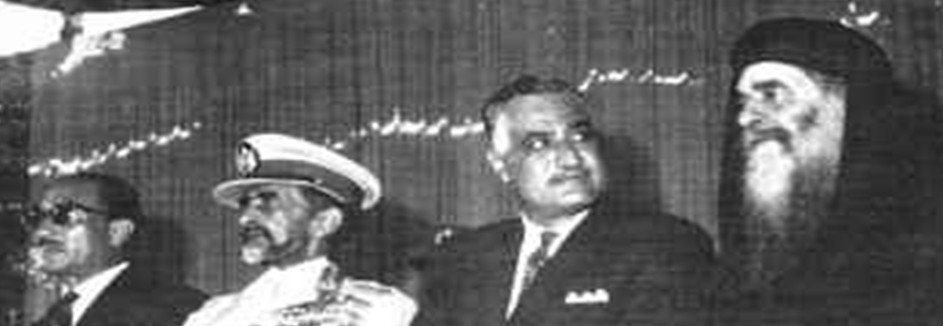

40 غير أن عضو مجلس الشعب أقترح أن يطرق على باب البابا كيرلبس مرتين فإذا لم يرد يذهب ويقول لجمال عبد الناصر أنه وجد البابا نائم , ولكنهم قبل أن يطرقوا على باب البابا فوجئوا ان البابا مرتديا مالبسه ويفتح الباب و يقول له " : ياال يا خويا .. ياال وكان جمال عبد الناصر له ابنه مريضة احضر لها كبار األطباء الذين قرروا أن مرضها ليس عضويا وعندما تكلم مع عضو مجلس الشعب ذكر له شفاء ابنه .. فدخل البابا مباشرة على حجرة أبنة جمال عبد الناصر المريضة وقال لها مبتسما : إنت وال عيانة وال حاجة وأقترب منها قداسة البابا وصلى لها ربع ساعة , وصرف الروح النجس وعادت األبنة إلى طبيعتها تماما ( 1 وهنا تحولت العالقة التى كانت فاترة فى يوم من األيام إلى صداقة بينهما ووصلت هذه العالقة إلى قال الرئيس جمال عبد الناصر يوما " : أنت من النهارد ة ابويا .. أنا هاقولك يا والدى على طول , وزى ما بتصلى ألوالدك المسيحيين صلى ألوالدى .. ومن دلوقت ما تجنيش القصر القصر الجمهورى , البيت ده بيتك وتيجى فى أى وقت أنت عاوزه " ( كتاب البابا كيرلس السادس رجل فوق الكلمات - مجدى سالمة ) وعبر الكاتب الصحفى الشهير مح مد حسنين هيكل عن العالقة بين البابا كيرلس والرئيس جمال عبد الناصر فقال " : كانت العالقات بين جمال عبد الناصر وكيرلس السادس عالقات ممتازة , وكان بينهما إعجاب متبادل , وكان معروفا أن البطريرك يستطيع مقابلة عبد الناصر فى أى وقت يشاء , وكان كيرلس حريصا على ت جنب المشاكل , وقد إستفاد كثيرا من عالقته الخاصة بعبد الناصر فى حل مشاكل عديدة " .. وأيضا ( البابا كيرلس وعبد الناصر - محمو د فوزى ) وفى لقاء من اللقاءات العديدة التى تمت بين البابا والرئيس فى سنة 1191 م قال البابا " : إنى بعون الرب سأعمل على تعليم أبنائى مع رفة الرب وحب الوطن ومعنى األخوة الحقة ليشب الوطن وحدة قوية لديها اإليمان بالرب والحب للوطن " .. ( القس رفائيل افامينا / حنا يوسف عطا : مذكراتى عن حياة البابا كيرلس السادس ) فأثنى الرئيس جمال عبد الناصر على وطنية البابا كيرلس ومدى وعيه وإلتزامه بتربية أوالده على حب الرب والوطن Quelle: http://www.elmogaz.com/node/78202#.UaukzXnwAwB صفحة 44
St. Markus · 2015 · Deutsch
عبد الناصر والبابا كيرلس-
Ausgabe 1 · Seite 40
